Palabra clave = lo que buscan los criterios oficiales de correcciónTexto en violeta = aclaración de BioCelia que no está en los criterios
1Qué entra en la PAU
Directrices de Andalucía 2026-27 · todo lo que entra en este tema
Texto literal de los resultados de aprendizaje de las Directrices y Orientaciones de Biología 2026-27. Cada punto está desarrollado en estos apuntes.
C.1.1 Identificación de la teoría celular.
Conocer los principios de la teoría celular: unidad estructural, fisiológica, reproductora y genética.
C.1.2 Desarrollo de destrezas para analizar sus implicaciones biológicas.
Relacionar los postulados de la teoría celular con hechos y fenómenos biológicos concretos como la organización celular de los seres vivos, la realización de funciones vitales por las células, la continuidad de la vida mediante la división celular y la transmisión de la información genética.
C.2.1 Diferenciación entre microscopía óptica y electrónica.
Comprender el fundamento básico de la microscopía óptica y electrónica (de transmisión y de barrido).
Comparar las principales características de los microscopios óptico, electrónico de transmisión y electrónico de barrido en relación con el tipo de radiación empleada, el aumento, el tipo de imagen obtenida y la posibilidad de observar muestras vivas o fijadas.
C.2.2 Desarrollo de estrategias de análisis de imágenes, poder de resolución y técnicas de preparación de muestras.
Comprender el concepto de poder de resolución y su importancia en la obtención e interpretación de imágenes microscópicas.
Identificar en imágenes de microscopía distintos tipos celulares y sus componentes, así como el tipo de microscopio con el que han sido obtenidas.
C.3.1 La membrana plasmática: identificación de la ultraestructura y propiedades.
Conocer la composición y organización de las membranas biológicas, relacionando su composición y estructura con sus funciones.
Conocer el modelo de mosaico fluido como explicación de la estructura y comportamiento de las membranas biológicas.
Relacionar la estructura de las membranas biológicas con sus funciones generales: barrera celular, permeabilidad selectiva, reconocimiento y comunicación celular.
C.3.2 El proceso osmótico: desarrollo de estrategias de análisis de su repercusión sobre la célula eucariota animal, vegetal y procariota.
Diferenciar los procesos de difusión, ósmosis y diálisis, comparando el tipo de partículas transportadas (moléculas o iones), la presencia o ausencia de membrana semipermeable y el mecanismo de movimiento.
Conocer los fenómenos osmóticos en las células animales y vegetales en medios hipertónicos, isotónicos o hipotónicos, relacionándolos con sus efectos sobre la célula.
C.3.3 El transporte a través de la membrana plasmática: identificación de mecanismos (difusión simple y facilitada, transporte activo, endocitosis y exocitosis) y tipos de moléculas transportadas con cada uno de ellos.
Describir y comparar los mecanismos de transporte a través de las membranas biológicas (difusión simple, difusión facilitada y transporte activo), diferenciando sus características, sus requerimientos energéticos y su relación con el tipo de sustancias transportadas y las propiedades de la membrana, e identificando en la difusión facilitada la participación de proteínas canal y proteínas transportadoras.
Conocer los procesos de transporte vesicular (endocitosis, pinocitosis, fagocitosis y exocitosis), relacionándolos con el transporte de sustancias de gran tamaño.
C.4.1 Reconocimiento de estructura y función básica de los orgánulos celulares eucariotas y procariotas.
Describir, localizar y reconocer en dibujos, esquemas y fotomicrografías los principales componentes y orgánulos de la célula eucariota: pared celular, membrana plasmática, citosol, núcleo, mitocondrias, plastos, retículo endoplásmico liso y rugoso, complejo de Golgi, lisosomas y peroxisomas, vacuolas y vesículas, ribosomas, citoesqueleto, centrosoma, cilios y flagelos.
Relacionar la estructura con la función de cada orgánulo, indicando ejemplos de tipos celulares en los que suelen encontrarse o ser más abundantes.
Reconocer el origen endosimbiótico de mitocondrias y cloroplastos como resultado de la incorporación de bacterias por una célula ancestral, identificando evidencias como la presencia de ADN propio, doble membrana, capacidad de división independiente y ribosomas con similitudes generales con los bacterianos.
Reconocer las diferencias estructurales entre los ribosomas eucariotas citosólicos (80S), mitocondriales (≈55S), plastídicos (70S) y bacterianos (70S), teniendo en cuenta su distinta sensibilidad a los antibióticos.
Describir, localizar e identificar en dibujos, esquemas y fotomicrografías los principales componentes de la célula procariota: cápsula, pared celular, membrana plasmática, citosol, cromosoma bacteriano, plásmidos, ribosomas, inclusiones y apéndices celulares (flagelos, fimbrias y pili), relacionando su estructura con su función.
C.4.2 Identificación de modelos de organización en eucariotas y procariotas. Células animales y vegetales.
Describir los modelos de organización celular: procariota, eucariota animal y eucariota vegetal.
Establecer semejanzas y diferencias entre los distintos tipos de organización celular, reconociéndolos en esquemas, imágenes o descripciones textuales.
Lo que más se ha preguntado (2010-2026)
Identificar orgánulos en una imagen y dar una función de cada uno (mitocondria, cloroplasto, RER/REL, Golgi, lisosomas, centrosoma…).
Mosaico fluido con dibujo; tipos de transporte y qué pasa sin ATP o a 60 ºC.
Ósmosis: glóbulos rojos y células vegetales en distintos medios (lechuga, pasas, suelos salinos).
Ribosomas 70S y 80S e inhibidores; endosimbiosis; ruta de secreción de proteínas.
El modelo 2026 preguntó los tres tipos celulares, su nutrición y los principios de la teoría celular.
2La teoría celular
Se formuló en el siglo XIX gracias al microscopio (Schleiden y Schwann, 1838-1839; Virchow añadió en 1855 que toda célula procede de otra; Santiago Ramón y Cajal demostró que también el tejido nervioso está formado por células independientes, las neuronas). Sus principios:
Principio
Enunciado
Hecho que lo demuestra
Unidad estructural (anatómica, morfológica)
Todos los seres vivos están formados por una o más células
Un tejido está formado por numerosas células
Unidad fisiológica (funcional)
La célula realiza todas las funciones vitales (nutrición, relación, reproducción)
El consumo de O₂ y la producción de energía de un organismo dependen del metabolismo de sus células
Unidad reproductora (de origen)
Toda célula procede de otra preexistente, por división
Un tejido lesionado se regenera por división de otras células
Unidad genética
La célula contiene la información hereditaria y la transmite a sus descendientes
Al dividirse, cada célula hija recibe una copia del ADN
Modelo 2026
Relacionar observaciones con principios: «el tejido está formado por numerosas células» → unidad estructural; «el consumo de oxígeno depende de la actividad de esas células» → unidad funcional; «el tejido se regenera por división de otras células» → unidad reproductora.
3Microscopía
El poder de resolución es la capacidad de distinguir como separados dos puntos muy próximos. El límite de resolución es la distancia más corta entre dos puntos a la que se distinguen como separados: cuanto menor es, más detalle se ve. Depende de la longitud de onda de la radiación: los electrones tienen una longitud de onda mucho menor que la luz.
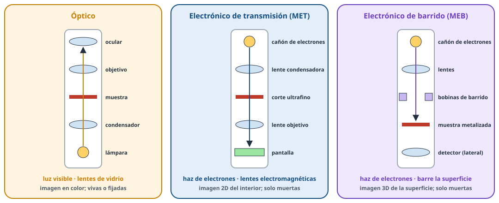
Figura 1. Esquema de los tres tipos de microscopio.
Óptico
Electrónico de transmisión (MET)
Electrónico de barrido (MEB)
Radiación
Luz visible
Haz de electrones (en el vacío)
Lentes
De vidrio: ocular (junto al ojo) y objetivo (junto a la muestra)
Electromagnéticas (bobinas)
Límite de resolución
≈ 0,2 µm
del orden de 1 nm o menos
algunos nm
Aumentos
hasta unos 1000-1500
cientos de miles o más
Imagen
En color (con tinciones)
En blanco y negro, plana: el interior (ultraestructura) de cortes ultrafinos
En blanco y negro, tridimensional de la superficie
Muestras
Vivas o fijadas y teñidas
Solo muertas (fijadas, deshidratadas; el vacío las destruiría)
Qué se ve
Células, núcleo, cloroplastos, bacterias teñidas
Orgánulos, membranas, ribosomas, virus
Superficie de células, microvellosidades, granos de polen
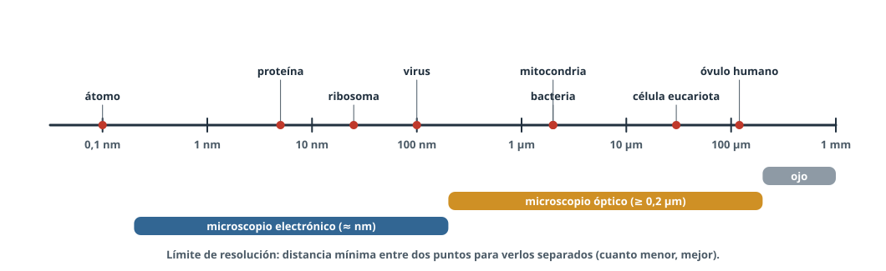
Figura 2. Tamaños y qué instrumento permite verlos.
Así lo preguntan (2024)
¿Qué microscopio usarías para contar glóbulos rojos? → Óptico. ¿Para una tinción de bacterias? → Óptico. ¿Para ver ribosomas? → Electrónico.
Leer una imagen de microscopía
¿Con qué microscopio? Imagen en color (tinciones), células enteras y pocos detalles internos → óptico. Imagen en grises, de un corte plano con membranas, crestas, ribosomas o cromatina → MET. Imagen en grises con relieve (aspecto tridimensional) de la superficie → MEB. Mira también la barra de escala: si mide nanómetros, es electrónica.
¿Qué tipo de célula? Sin núcleo, de 1-10 µm, con pared y quizá flagelo → bacteria. Con núcleo, pared gruesa, gran vacuola central y cloroplastos → vegetal. Con núcleo, sin pared, con lisosomas, centriolos o microvellosidades → animal.
¿Qué orgánulo? Doble membrana con crestas → mitocondria; doble membrana con tilacoides apilados → cloroplasto; sacos aplanados con puntitos → RER; pila curvada de cisternas → Golgi; doble membrana con poros → envoltura nuclear.
Preparación de muestras(sin detalle): para el óptico se fija, se corta en láminas finas (o se hace un frotis) y se tiñe; para el MET, cortes ultrafinos contrastados con metales pesados; para el MEB, la muestra entera se recubre con una fina capa de metal.
4Modelos de organización celular
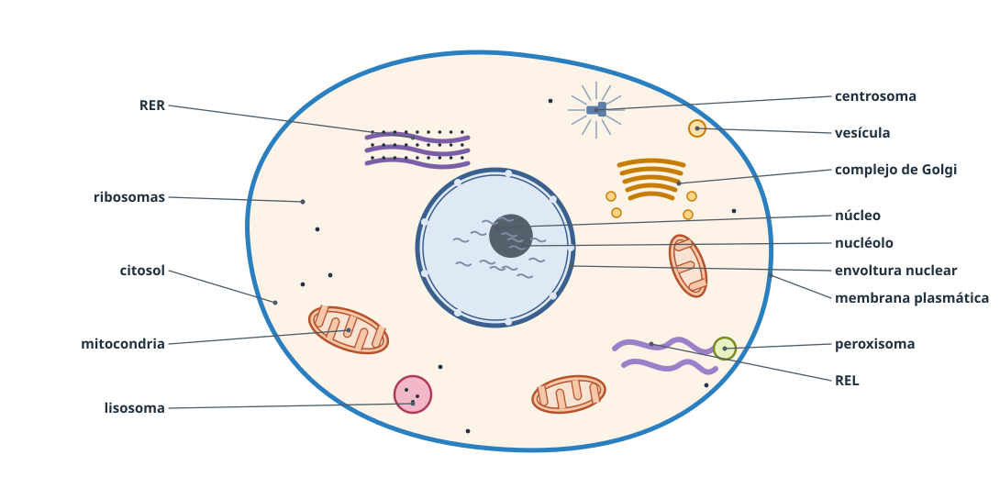
Figura 3. Célula eucariota animal.
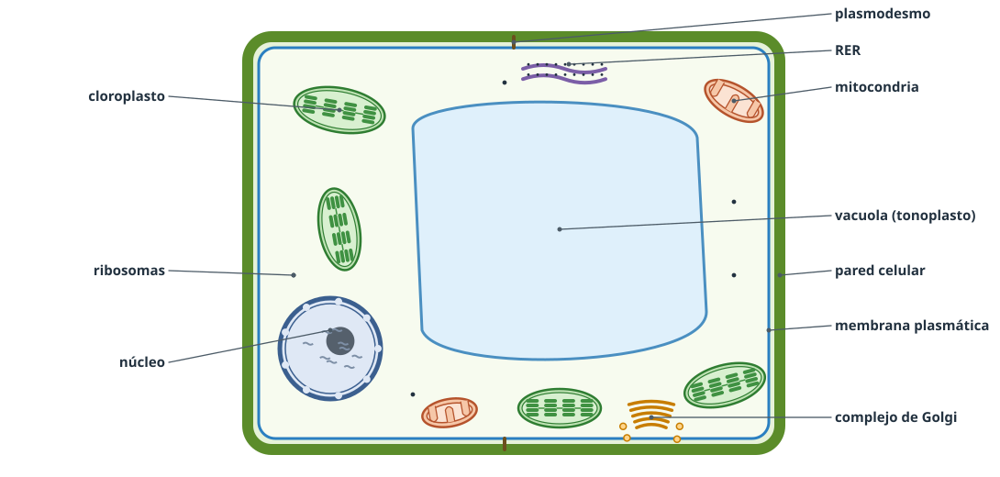
Figura 4. Célula eucariota vegetal.
Procariota
Eucariota animal
Eucariota vegetal
Núcleo
No: ADN en el nucleoide
Sí, con envoltura nuclear
Orgánulos membranosos
No
Sí (funciones compartimentadas)
Ribosomas
70S
80S (y 70S/≈55S en orgánulos)
Material genético
Un cromosoma circular sin histonas + plásmidos
Varios cromosomas lineales con histonas
División
Bipartición
Mitosis (y meiosis)
Tamaño
1-10 µm
10-100 µm
Pared celular
Sí (peptidoglucano)
No (matriz extracelular, glucocáliz)
Sí, de celulosa
Cloroplastos
No
No
Sí
Vacuolas
—
Pequeñas y numerosas
Una o pocas, grandes
Centrosoma (centriolos)
No
Sí
No
Citocinesis
—
Por estrangulamiento (anillo contráctil)
Por fragmoplasto (vesículas del Golgi)
Nutrición
Autótrofa o heterótrofa
Heterótrofa
Autótrofa
Reservas
Inclusiones
Glucógeno
Almidón
Deducir la nutrición (modelo 2026)
Con cloroplastos → autótrofa (fotosíntesis).
Sin cloroplastos y eucariota → heterótrofa: no puede fabricar materia orgánica a partir de inorgánica.
Procariota sin más datos → no se puede deducir: hay bacterias autótrofas y heterótrofas.
Una célula vegetal también necesita mitocondrias: la energía de los cloroplastos se invierte en fabricar materia orgánica; para obtener ATP la degrada en la respiración celular.
5La célula procariota
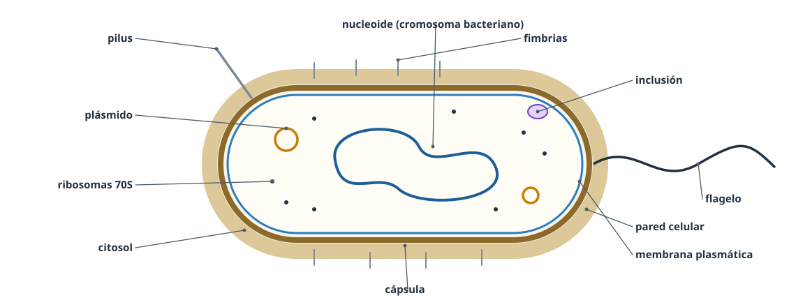
Figura 5. Componentes de una bacteria.
Componente
Estructura
Función
Cápsula
Capa externa de polisacáridos (no siempre presente)
Protección frente a la fagocitosis y la desecación; adherencia
Pared celular
Rígida, de peptidoglucano (mureína) gruesa en las Gram positivas; fina y con membrana externa en las Gram negativas
Dar forma y proteger de la lisis osmótica
Membrana plasmática
Bicapa lipídica con proteínas
Paso selectivo; en ella ocurren procesos como la respiración o la fotosíntesis
Citosol
Medio acuoso
Reacciones metabólicas
Cromosoma bacteriano (nucleoide)
Una molécula de ADN circular sin histonas
Información genética
Plásmidos
Pequeños ADN circulares extracromosómicos
Información genética adicional (resistencias a antibióticos…)
Ribosomas
70S (50S + 30S)
Síntesis de proteínas
Inclusiones
Gránulos de reserva (glucógeno, gotas de lípidos, polifosfatos…)
Almacén
Flagelos
Filamentos largos (de la proteína flagelina; no tienen la estructura 9 + 2 de los eucariotas)
Movilidad
Fimbrias
Filamentos cortos y numerosos
Adhesión
Pili (sexuales)
Filamentos más largos y escasos
Transferencia de ADN por conjugación
6La membrana plasmática
Envoltura continua que delimita la célula y separa el medio interno del externo. Solo se ve con el microscopio electrónico (unos 7,5 nm de grosor). Todas las membranas celulares (plasmática y de los orgánulos) tienen la misma organización.
Composición
Lípidos: fosfolípidos (anfipáticos) formando una bicapa lipídica, con las cabezas hidrófilas hacia el agua y las colas hidrófobas enfrentadas; colesterol intercalado (en animales); glucolípidos en la cara externa.
Proteínas: integrales o transmembrana (atraviesan la bicapa) y periféricas (adosadas a una cara). Determinan la mayoría de las funciones: transporte, receptores, enzimas, reconocimiento.
Glúcidos: oligosacáridos unidos a lípidos y proteínas (glucolípidos y glucoproteínas), solo en la cara externa. Forman el glucocáliz. Proporción aproximada (variable): 40 % lípidos, 50 % proteínas, 10 % glúcidos.
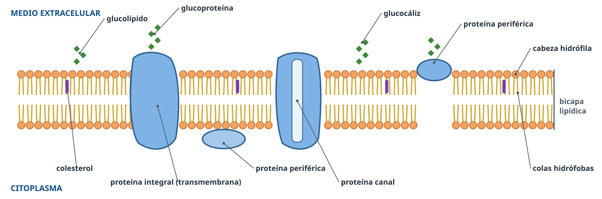
Figura 6. Modelo del mosaico fluido (Singer y Nicolson, 1972).
Modelo del mosaico fluido
Mosaico: las proteínas están embebidas en la bicapa como las piezas de un mosaico.
Fluido: lípidos y proteínas se desplazan lateralmente; la membrana no es rígida, puede repararse, fusionarse y formar vesículas.
Asimétrico: las dos caras son distintas (glúcidos solo en la externa).
Es un modelo universal: válido para todos los tipos celulares y todas las membranas.
¿Qué cambia la fluidez?
Más ácidos grasos insaturados (dobles enlaces) → los «codos» separan las colas → más fluidez (PAU 2024).
Colas más cortas y más temperatura → más fluidez.
Colesterol: estabiliza; reduce la fluidez con calor y evita que la membrana se «congele» con frío.
Funciones
Barrera que mantiene el medio interno y permeabilidad selectiva (controla el intercambio de sustancias).
Reconocimiento celular (glucocáliz: grupos sanguíneos, sistema inmunitario) y adhesión entre células.
Comunicación: receptores que captan señales (hormonas, neurotransmisores) y las transmiten al interior.
7Difusión, ósmosis y diálisis
Qué pasa
Membrana
Sentido
Difusión
Solutos (moléculas o iones)
No hace falta (si la hay, debe dejarlos pasar)
De la disolución más concentrada a la más diluida
Ósmosis
El disolvente (agua)
Semipermeable (deja pasar el agua, no los solutos)
De la más diluida (hipotónica) a la más concentrada (hipertónica)
Diálisis
Agua y solutos pequeños; las macromoléculas quedan retenidas
Semipermeable con poros de un tamaño
Los solutos pequeños, a favor de su gradiente
La diálisis es el fundamento de la hemodiálisis: la sangre pasa junto a una membrana que deja salir la urea y las sales sobrantes pero retiene las proteínas y las células.
Las células en medios de distinta concentración
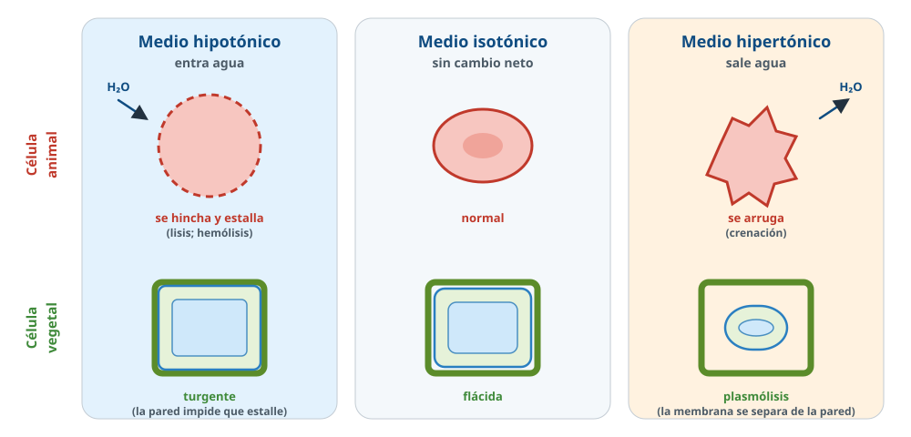
Figura 7. Efectos de la ósmosis en células animales y vegetales.
Medio
Agua
Célula animal
Célula vegetal
Hipotónico
Entra
Se hincha y puede estallar (lisis; en glóbulos rojos, hemólisis)
Turgente: no estalla, la protege la pared celular
Isotónico
Sin intercambio neto
El volumen no cambia
Hipertónico
Sale
Se deshidrata y se encoge (crenación)
Plasmólisis: la membrana se separa de la pared
Situaciones cotidianas que caen
Lechuga en agua → medio hipotónico, entra agua por ósmosis: turgente. Lechuga aliñada con sal → hipertónico, sale agua: se arruga.
Pasas en agua → recuperan su tamaño porque entra agua por ósmosis (tienen más concentración de azúcar en el interior). Se secan para conservarlas: la escasez de agua impide la proliferación de microorganismos.
Plantas de suelos salinos → necesitan un medio interno hipertónico respecto al suelo para que entre agua por ósmosis.
Suero fisiológico (0,9 % NaCl) → isotónico con la sangre.
8Transporte a través de la membrana
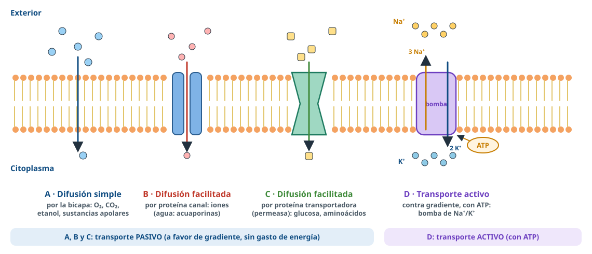
Figura 8. Mecanismos de transporte de moléculas pequeñas (como en la pregunta de 2016).
Transporte pasivo (a favor de gradiente, sin gasto de energía)
Difusión simple: a través de la bicapa, sin transportadores. Pasan moléculas pequeñas apolares o liposolubles (O₂, CO₂, etanol, hormonas esteroideas) y, en pequeña cantidad, agua.
Difusión facilitada: mediada por proteínas:
Proteínas canal: forman un poro por el que pasan iones (Na⁺, K⁺, Ca²⁺, Cl⁻); muchos se abren o cierran por voltaje o por la unión de una molécula. Las acuaporinas son canales de agua.
Proteínas transportadoras (permeasas): se unen a la molécula y cambian de forma para pasarla al otro lado: glucosa, aminoácidos.
Transporte activo (contra gradiente, con gasto de energía)
Lo realizan proteínas transportadoras (bombas) que gastan ATP para mover sustancias en contra de su gradiente. Ejemplo: la bomba de Na⁺/K⁺, que saca 3 Na⁺ y mete 2 K⁺ por cada ATP; mantiene la composición iónica de la célula y el potencial de membrana.
Razonar los «qué pasaría si…» (muy frecuente)
Sin ATP (se inhibe la cadena respiratoria): difusión simple y facilitada no se afectan porque no requieren energía; el transporte activo no se realiza (la bomba Na⁺/K⁺ se para).
A 60 ºC: se desnaturalizan las proteínas transportadoras: no hay difusión facilitada ni transporte activo, sí difusión simple.
¿Por qué los esteroides atraviesan la membrana sin transportador? → Son lípidos y atraviesan la bicapa. Iones, glúcidos y proteínas tienen carga o son polares y necesitan transportadores específicos.
¿Por qué cada orgánulo tiene una composición distinta a la del citosol? → Sus membranas tienen permeabilidad selectiva.
Transporte de macromoléculas: endocitosis y exocitosis
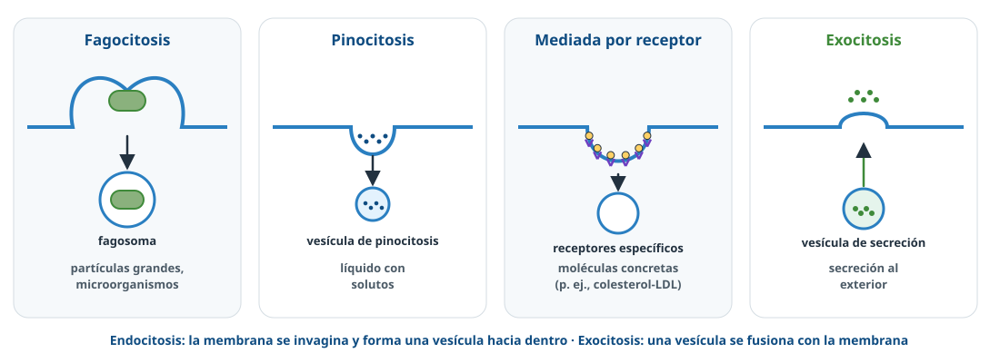
Figura 9. Transporte en vesículas.
Endocitosis: la membrana se invagina y engloba el material en una vesícula:
Fagocitosis: partículas grandes o microorganismos, mediante pseudópodos (macrófagos, neutrófilos, amebas). Forma un fagosoma.
Pinocitosis: líquido con solutos disueltos, en pequeñas vesículas.
Mediada por receptor: moléculas concretas que se unen a receptores específicos (por ejemplo, el colesterol unido a las LDL).
Exocitosis: una vesícula se fusiona con la membrana y vierte su contenido al exterior (secreción de hormonas, enzimas digestivas, neurotransmisores). Además, renueva la membrana.
9Pared celular y matriz extracelular
Pared celular vegetal
Cubierta rígida por fuera de la membrana. Su componente principal es la celulosa, con hemicelulosa y pectinas.
Estructura: lámina media (pectinas, une células vecinas), pared primaria (fina, flexible, en células en crecimiento) y pared secundaria (gruesa, rígida, con lignina; aparece cuando la célula deja de crecer).
Plasmodesmos: conductos que atraviesan la pared y comunican el citoplasma de células vecinas.
Funciones: protección, esquelética (forma y rigidez, mantiene la planta erguida), resistencia a la presión osmótica (impide que la célula estalle), unión entre células y barrera frente a patógenos.
Ventaja y limitación (PAU 2011)
La pared protege y evita la lisis en medio hipotónico, pero impide el movimiento y los cambios de forma de la célula, y la célula vegetal no puede hacer fagocitosis (por eso no hay células vegetales que se desplacen o fagociten).
Matriz extracelular y glucocáliz (células animales)
Las células animales carecen de pared. Están rodeadas por la matriz extracelular: red de proteínas fibrosas (colágeno, elastina) en un gel de polisacáridos hidratados; muy abundante en el tejido conjuntivo (cartílago, hueso). Da soporte, une las células y permite la difusión de sustancias. El glucocáliz son los glúcidos de la cara externa de la membrana.
10Citosol, citoesqueleto, centrosoma, cilios y flagelos
El citosol (hialoplasma) es el medio acuoso del citoplasma (unos 85 % de agua) con proteínas, sales, ARN… Es el lugar de muchas reacciones: glucólisis, síntesis de proteínas en ribosomas libres, fermentaciones, síntesis de ácidos grasos.
Citoesqueleto
Red de filamentos proteicos del citoplasma que mantiene la forma, permite el movimiento y organiza los orgánulos.
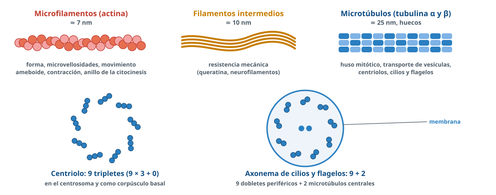
Figura 10. Componentes del citoesqueleto y estructuras formadas por microtúbulos.
Componente
Estructura
Funciones
Microfilamentos (filamentos de actina)
≈ 7 nm; dos cadenas de actina enrolladas helicoidalmente
Forma celular, microvellosidades, movimiento ameboide (pseudópodos, fagocitosis), contracción muscular (con miosina), anillo contráctil de la citocinesis
Huso mitótico, transporte de vesículas y orgánulos, forma; forman centriolos, cilios y flagelos
Centrosoma
Solo en células animales, junto al núcleo. Formado por dos centriolos perpendiculares (diplosoma), cada uno con 9 tripletes de microtúbulos (9 × 3 + 0), rodeados de material pericentriolar del que salen microtúbulos (áster). Es el centro organizador de microtúbulos: forma el huso en la división. Se duplica en la fase S. Las plantas no tienen centriolos, pero sí centros organizadores de microtúbulos.
Cilios y flagelos
Prolongaciones móviles de la membrana. Cilios: cortos y numerosos. Flagelos: largos y escasos.
Axonema: 9 dobletes periféricos + 2 microtúbulos centrales (9 + 2), rodeado de membrana. En la base, el corpúsculo basal, con estructura de centriolo (9 × 3 + 0).
Funciones: desplazar la célula (espermatozoide, protozoos) o mover el líquido de su superficie (cilios de la tráquea, que mueven el moco que retiene el polvo; trompas de Falopio).
Razonamientos con microtúbulos
Colchicina (impide la polimerización): no se forma el huso y no hay división; también afecta a cilios y flagelos; no afecta a las bacterias, que se dividen sin huso.
Síndrome de Kartagener (cilios defectuosos): el flagelo del espermatozoide tiene la misma estructura y pierde movilidad → infertilidad masculina.
Chlamydomonas regenera sus flagelos salvo con un inhibidor de la síntesis de proteínas: los microtúbulos son de tubulina, una proteína.
11Ribosomas
Orgánulos sin membrana, formados por ARN ribosómico y proteínas, con dos subunidades que se unen al traducir. Función: síntesis de proteínas. Están en todas las células (salvo en los glóbulos rojos maduros de mamífero, que pierden sus orgánulos). Las subunidades de los ribosomas eucariotas se ensamblan en el nucléolo.
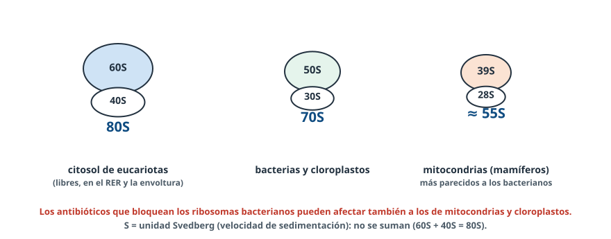
Figura 11. Tipos de ribosomas.
Tipo
Subunidades
Localización
80S
60S + 40S
Eucariotas: libres en el citosol (o en polirribosomas), adosados al RER y a la cara externa de la envoltura nuclear
70S
50S + 30S
Procariotas y estroma de los cloroplastos
Mitocondriales (≈ 55S en mamíferos)
39S + 28S
Matriz mitocondrial; los criterios antiguos los clasifican como 70S y, como los bacterianos, son sensibles a muchos antibióticos
Inhibidor de ribosomas 70S en células eucariotas (PAU 2018, 2024)
¿Sintetizan proteínas? → Sí: sus ribosomas citoplasmáticos son 80S. (Los criterios admiten «no» si se razona que, al fallar la mitocondria, falta ATP.)
¿Respiran? → No: los ribosomas mitocondriales se ven afectados y la mitocondria deja de fabricar sus proteínas.
¿Fotosintetizan las vegetales? → No: los ribosomas de los cloroplastos también son 70S.
Por eso algunos antibióticos que bloquean los ribosomas bacterianos (como el cloranfenicol) tienen efectos secundarios en nuestras células.
Sensibilidad a antibióticos (ejemplos)
80S citosólicos
Mitocondriales (≈55S)
70S de plastos y bacterias
Estreptomicina, tetraciclina, cloranfenicol (frenan la traducción bacteriana)
No les afectan
Les afectan en parte (efectos secundarios)
Sí les afectan
Cicloheximida (inhibidor de laboratorio)
Sí
No
No
Esta distinta sensibilidad es la base de que los antibióticos ataquen a las bacterias sin dañar (o dañando poco) nuestras células, y es otra prueba del parentesco entre mitocondrias, cloroplastos y bacterias.
La unidad S (Svedberg) mide la velocidad de sedimentación al centrifugar y depende de la masa y la forma: por eso los valores no se suman (60S + 40S = 80S).
12Sistema de endomembranas
Conjunto de orgánulos de membrana simple comunicados por vesículas: envoltura nuclear, retículo endoplasmático, complejo de Golgi, lisosomas y vacuolas. Permiten la compartimentación: cada compartimento tiene su propio contenido y sus propias reacciones.
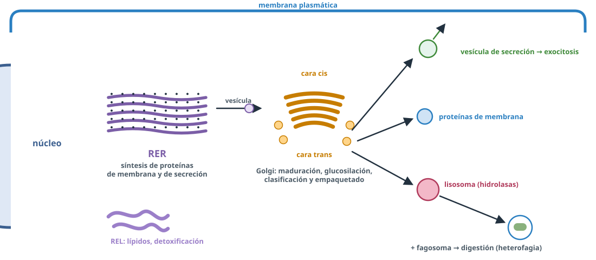
Figura 12. Ruta de las proteínas en el sistema de endomembranas.
Retículo endoplasmático
RER (rugoso)
REL (liso)
Estructura
Sacos aplanados (cisternas) con ribosomas en la cara citosólica; continuo con la envoltura nuclear
Túbulos sin ribosomas, continuos con el RER
Funciones
Síntesis de proteínas de membrana, de secreción y de los lisosomas; glucosilación inicial; plegamiento
Síntesis de lípidos (fosfolípidos, colesterol, hormonas esteroideas); detoxificación (fármacos, alcohol); almacén de Ca²⁺ (contracción muscular); liberación de glucosa en el hígado
Abunda en
Células secretoras de proteínas: páncreas, células plasmáticas
Hígado; células que fabrican esteroides (gónadas, suprarrenales); músculo
Complejo de Golgi
Estructura: uno o varios dictiosomas, pilas de cisternas membranosas aplanadas, con vesículas. Polarizado: cara cis (de formación), que recibe las vesículas del RER, y cara trans (de maduración), donde se forman las vesículas de secreción.
Funciones: maduración y glucosilación de lípidos y proteínas; clasificación y embalaje de productos de secreción; formación de lisosomas; reciclaje de membrana; síntesis de polisacáridos de la pared celular vegetal (y formación del fragmoplasto en la citocinesis vegetal); formación del acrosoma del espermatozoide.
Ruta de secreción de una proteína (lipasa pancreática, mucinas, insulina…)
Ribosomas → RER → aparato de Golgi → vesículas de secreción → membrana plasmática (exocitosis). En el RER se sintetizan y modifican las proteínas, que viajan en vesículas de transferencia al Golgi, donde maduran y se distribuyen. Las células secretoras tienen muy desarrollados el RER y el Golgi.
Golgi bloqueado (PAU 2013)
Una glándula con el Golgi inhibido sí sintetiza su hormona (se fabrica en el RER) pero no la secreta. Una célula animal sí se divide (citocinesis por estrangulamiento), pero una vegetal no, porque el fragmoplasto se forma con vesículas del Golgi.
Lisosomas
Vesículas con enzimas hidrolíticas (hidrolasas ácidas) que funcionan a pH ácido (≈ 5). Proceden del complejo de Golgi.
Función: digestión intracelular.
Heterofagia: digestión de material del exterior; el lisosoma se fusiona con un fagosoma o vesícula de endocitosis.
Autofagia: digestión de componentes de la propia célula (orgánulos viejos) en un autofagosoma.
Abundan en glóbulos blancos (macrófagos, neutrófilos), que digieren las sustancias extrañas.
Vacuolas
Vesículas grandes rodeadas de membrana (tonoplasto en vegetales). En las células vegetales hay una o pocas muy grandes: mantienen la turgencia, almacenan agua, sales, pigmentos, reservas y productos de desecho (y también tienen enzimas digestivas, como los lisosomas). En animales son pequeñas.
Peroxisomas
Vesículas de membrana simple con enzimas oxidasas y catalasa: las oxidasas oxidan diversas sustancias (ácidos grasos de cadena muy larga, sustancias tóxicas) produciendo agua oxigenada, que la catalasa descompone en agua y O₂. Abundan en hígado y riñón (detoxificación). En las semillas, los glioxisomas transforman los lípidos de reserva en glúcidos. No forman parte del sistema de endomembranas en sentido estricto.
13Mitocondrias, cloroplastos y endosimbiosis
Mitocondria
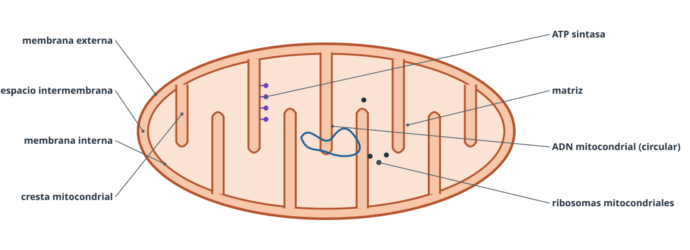
Figura 13. Estructura de la mitocondria.
Orgánulo de doble membrana, en el citoplasma de casi todas las células eucariotas, animales y vegetales. Se dividen por sí mismas.
Estructura: membrana externa (muy permeable), espacio intermembrana, membrana interna plegada en crestas (con la cadena respiratoria y la ATP sintasa) y matriz, con ADN mitocondrial circular, ribosomas mitocondriales y enzimas.
Función: respiración celular, obtener ATP oxidando materia orgánica:
En la matriz: ciclo de Krebs, β-oxidación de los ácidos grasos, síntesis de proteínas y replicación del ADN mitocondrial.
En la membrana interna (crestas): cadena de transporte de electrones y fosforilación oxidativa.
Abundan en células que gastan mucha energía: músculo cardiaco (contracción), espermatozoides (movimiento del flagelo), neuronas.
Cloroplasto
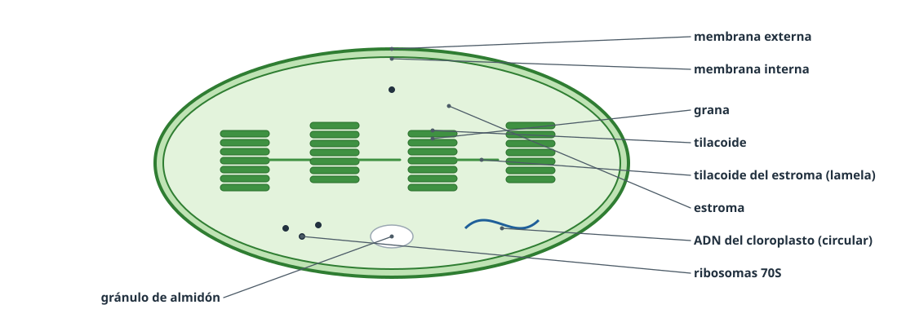
Figura 14. Estructura del cloroplasto.
Orgánulo de doble membrana, exclusivo de células vegetales y algas (es un tipo de plasto).
Estructura: membrana externa, membrana interna, estroma (con ADN circular, ribosomas 70S, enzimas y gránulos de almidón) y tilacoides, sacos membranosos con los pigmentos (clorofilas, carotenos), apilados en grana y unidos por tilacoides del estroma.
Función: fotosíntesis. En la membrana de los tilacoides, la fase luminosa (captación de la luz, fotólisis del agua, transporte de electrones, síntesis de ATP y NADPH); en el estroma, el ciclo de Calvin (fijación del CO₂). También sintetizan ácidos grasos y almidón.
Otros plastos: cromoplastos (pigmentos de flores y frutos) y amiloplastos (almacenan almidón, como en la patata).
Teoría endosimbiótica
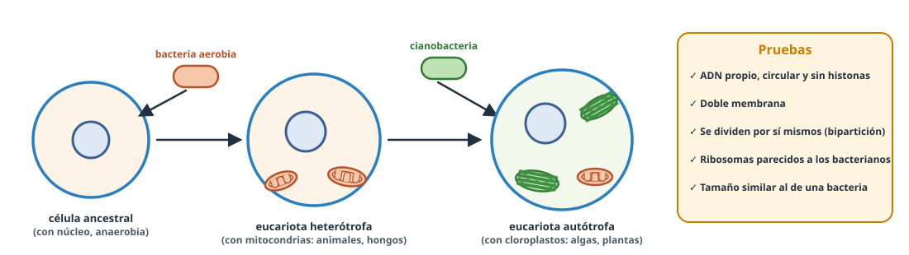
Figura 15. Origen endosimbiótico de mitocondrias y cloroplastos (Lynn Margulis, 1967).
Las mitocondrias proceden de bacterias aerobias y los cloroplastos de bacterias fotosintéticas (cianobacterias) que fueron englobadas por una célula ancestral y establecieron con ella una relación simbiótica, hasta convertirse en orgánulos.
Pruebas (basta con dos): ADN propio, circular y sin histonas, como el bacteriano; ribosomas 70S en los cloroplastos y ribosomas mitocondriales (≈55S en mamíferos), ambos con similitudes con los bacterianos y sensibles a antibióticos antibacterianos; doble membrana (la interna sería la de la bacteria); división independiente por bipartición; tamaño parecido al de una bacteria.
14El núcleo
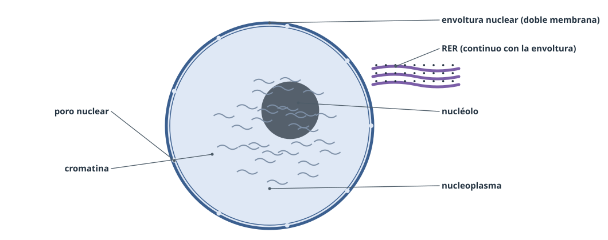
Figura 16. Núcleo interfásico.
Contiene la información genética y dirige la actividad celular. En interfase se distinguen:
Envoltura nuclear: doble membrana continua con el RER, con poros nucleares que regulan el paso de moléculas (ARNm, subunidades ribosómicas, proteínas). Composición: fosfolípidos, colesterol y proteínas.
Nucleoplasma: agua, sales, nucleótidos y enzimas; medio de las reacciones nucleares.
Cromatina: ADN y proteínas (histonas); contiene la información genética. Eucromatina (activa) y heterocromatina (condensada, inactiva).
Nucléolo: ADN, ARN y proteínas; síntesis del ARN ribosómico y montaje de las subunidades de los ribosomas.
Razonamientos con el núcleo
Relación nucléolo-síntesis de proteínas: las proteínas se fabrican en ribosomas, cuyo ARNr se sintetiza en el nucléolo. Por eso las células secretoras tienen más nucléolos (o más grandes).
Acetabularia cortada en dos: solo regenera la célula el fragmento con el núcleo, portador de la información genética (si además conserva ribosomas y mitocondrias).
El estudio detallado de la cromatina y del cromosoma está en los temas de genética molecular y de mitosis y meiosis.
15Orgánulos y tipos celulares
La abundancia de cada orgánulo refleja la función de la célula:
Célula
Orgánulo abundante
Por qué
Páncreas, células plasmáticas
Ribosomas, RER, Golgi
Fabrican y secretan proteínas (enzimas digestivas, insulina, anticuerpos)
Músculo cardiaco, espermatozoides
Mitocondrias
Necesitan mucho ATP (contracción, movimiento)
Glóbulos blancos (macrófagos)
Lisosomas
Digieren microorganismos y sustancias extrañas
Hepatocitos
REL y peroxisomas
Detoxificación, síntesis de lípidos
Células de las gónadas y suprarrenales
REL
Síntesis de hormonas esteroideas
Epitelio de la tráquea
Cilios
Mueven el moco que retiene el polvo
Células del parénquima de la hoja
Cloroplastos
Fotosíntesis
Epitelio intestinal
Microvellosidades (actina)
Aumentan la superficie de absorción
¿Dónde ocurre cada proceso? (pregunta de 2 puntos)
Sara y Fran observan tres células: A tiene pared celular, cloroplastos, mitocondrias y núcleo delimitado; B no tiene núcleo delimitado ni orgánulos membranosos, pero sí ribosomas y pared; C tiene núcleo y mitocondrias, pero no pared ni cloroplastos. a) Tipo de organización de A, B y C [0,3]. b) Tipo de nutrición de cada una, razonado [0,6]. En un organismo con células tipo C observan: 1) un tejido formado por numerosas células; 2) el consumo de oxígeno y la producción de energía dependen de la actividad de esas células; 3) tras una lesión, el tejido se regenera por división de otras células. c) Relacione cada observación con un principio de la teoría celular [0,6]. d) ¿Por qué A necesita mitocondrias si tiene cloroplastos? [0,5]
Ver respuesta modelo
a) A: eucariota vegetal; B: procariota; C: eucariota animal.
b) A tiene cloroplastos, hace la fotosíntesis: autótrofa. B: con los datos disponibles no se puede deducir. C carece de cloroplastos y no puede fabricar materia orgánica a partir de inorgánica: heterótrofa.
c) 1: la célula es la unidad estructural; 2: la unidad funcional (fisiológica); 3: la unidad reproductora (de origen).
d) La energía captada por los cloroplastos se invierte en producir materia orgánica; para obtener ATP y realizar sus funciones la célula necesita las mitocondrias, que degradan esa materia orgánica.
PAU 2016 · Junio2 puntos
Exponga cuatro principios de la teoría celular [1]. Indique cinco diferencias entre las células procarióticas y eucarióticas [1].
Ver respuesta modelo
La célula es la unidad anatómica, fisiológica, de origen (toda célula procede de otra) y genética de los seres vivos.
Diferencias: presencia o no de núcleo, de orgánulos membranosos, tamaño de los ribosomas (70S/80S), organización del material genético, división por mitosis o bipartición.
PAU 2024 · Reserva A2 puntos
a) Defina poder de resolución [0,5]. b) Fuente de radiación del microscopio óptico y del electrónico [0,5]. c) ¿Cómo se llama la lente cercana al ojo? [0,2] d) ¿Y la próxima a la muestra? [0,2] ¿Qué microscopio usaría para: e) contar glóbulos rojos [0,2]; f) ver una tinción de bacterias [0,2]; g) observar ribosomas [0,2]?
Ver respuesta modelo
a) Distancia más corta entre dos puntos a la que se distinguen como separados(propiamente es el límite de resolución; el poder de resolución es la capacidad de distinguirlos). b) Óptico: luz; electrónico: haz de electrones. c) Ocular. d) Objetivo. e) Óptico. f) Óptico. g) Electrónico.
PAU 2010 (y 2014)2 puntos
Describa la estructura y composición química de la membrana plasmática [1]. ¿A qué tipos celulares y membranas es aplicable el modelo de mosaico fluido? [0,4] Nombre tres funciones de la membrana [0,6].
Ver respuesta modelo
Bicapa lipídica (fosfolípidos, colesterol) con proteínas periféricas y transmembranales y glúcidos en la capa externa. Es un modelo universal: todos los tipos celulares y todos los tipos de membrana. Funciones: permeabilidad selectiva, mantenimiento del medio interno, intercambio de sustancias, reconocimiento celular.
PAU 2016 · Junio1 punto
Al fusionar una célula de ratón con una de oveja, al principio las proteínas de membrana de cada una ocupan una mitad de la célula fusionada; con el tiempo aparecen mezcladas. Explíquelo [1].
Ver respuesta modelo
El modelo de mosaico fluido: las proteínas se desplazan lateralmente en la membrana.
PAU 2024 · Suplente A1 punto
Un medicamento aumenta mucho el número de dobles enlaces de los ácidos grasos de las membranas. ¿Qué efecto puede tener? [1]
Ver respuesta modelo
Más dobles enlaces supone más ácidos grasos insaturados, que aumentan la fluidez de la membrana(los codos de los dobles enlaces separan las colas).
PAU 2016 · Junio2 puntosCon imagen
Un esquema muestra cuatro procesos de transporte (A: difusión por la bicapa; B: por canal; C: por transportadora; D: bomba con ATP). a) ¿Qué representa? Identifique la bicapa, los fosfolípidos y las proteínas; agrupe los procesos según sus requerimientos energéticos [1]. b) ¿Por cuál pasan CO₂, O₂ y H₂O? ¿Cómo se llaman B y C? Ponga un ejemplo de D. ¿Podría la célula funcionar solo con A, B y C? [1]
Ver respuesta modelo
a) Transporte a través de membrana; 1: bicapa lipídica; 2: fosfolípidos; 3: proteínas. Transporte pasivo (A, B y C) y transporte activo (D).
b) Por A: difusión simple. B y C: difusión facilitada (por canal y por transportadora). D: bomba de Na⁺-K⁺, contra gradiente y con ATP. No: el transporte activo es necesario para mantener la composición iónica e importar solutos contra gradiente.
PAU 2022 · Suplente julio (y 2012)1 punto
¿Cómo se afectarían la difusión simple, la difusión facilitada y el transporte activo si: a) se inhibe la cadena transportadora de electrones [0,5]; b) se sube la temperatura a 60 ºC [0,5]?
Ver respuesta modelo
a) Las difusiones no se afectan porque no requieren energía; el transporte activo no se realiza porque necesita ATP. b) El calor desnaturaliza los transportadores (proteínas): no hay transporte activo ni difusión facilitada, pero sí difusión simple.
PAU 2018 · Suplente septiembre2 puntos
a) Diferencie difusión y ósmosis [0,8]. b) Explique el comportamiento de la célula según la concentración del medio [1,2].
Ver respuesta modelo
a) Difusión: los solutos pasan de la disolución más concentrada a la más diluida. Ósmosis: pasa el disolvente (agua) de la más diluida a la más concentradaa través de una membrana semipermeable.
b) Isotónico: el volumen no cambia. Hipertónico: disminuye porque sale agua. Hipotónico: aumenta porque entra agua.
PAU 2017 · Junio1 punto
a) ¿Tendría una célula animal el mismo comportamiento que una vegetal en una solución hipotónica? [0,5] b) ¿Y en una hipertónica? [0,5]
Ver respuesta modelo
a) No: la animal sufre lisis; la vegetal está protegida por la pared celular. b) Sí, ambas pierden agua: la animal se deshidrata y se encoge; en la vegetal la membrana se separa de la pared (plasmólisis).
PAU 20151 punto
La lipasa pancreática es una glucoproteína secretada al intestino. Justifique el modo de transporte para salir de la célula [0,4] y el camino desde donde se sintetiza hasta su secreción [0,6].
Ver respuesta modelo
Es una macromolécula: sale por exocitosis en vesículas de secreción. Camino: ribosomas → RER → aparato de Golgi → vesículas de secreción.
PAU 2021 · Reserva junio1 puntoCon imagen
En una figura con orgánulos numerados: a) nombre 1, 2, 3 y 4 [0,4]; b) origen de 1 [0,2]; c) procesos tras la fusión de 1 con 2 y de 1 con 3 [0,4].
Ver respuesta modelo
a) 1: lisosoma; 2: fagosoma; 3: autofagosoma; 4: retículo endoplasmático. b) El complejo de Golgi. c) 1 con 2: heterofagia; 1 con 3: autofagia.
PAU 2024 · Titular A2 puntos
a) Describa la estructura de los ribosomas de las células eucarióticas [0,8]. b) Composición [0,3]. c) Función [0,2]. d) Todas sus localizaciones [0,5]. e) ¿Qué ribosomas tienen los procariotas? [0,2]
Ver respuesta modelo
a) Citoplasmáticos: dos subunidades, 80S (60S y 40S). Mitocondriales y plastidiales: dos subunidades, 70S (50S y 30S) (los mitocondriales de mamífero son en realidad de unos 55S, como recogen las directrices). b) ARN ribosómico y proteínas. c) Síntesis de proteínas. d) Libres en el citoplasma, adosados al RER, en la cara externa de la envoltura nuclear, matriz mitocondrial y estroma del cloroplasto. e) 70S.
PAU 20112 puntos
Dibuje una mitocondria [0,3] e indique siete componentes [0,7]. Cite dos procesos metabólicos que ocurran en ella [0,5]. Indique dos argumentos a favor de su origen endosimbiótico [0,5].
Ver respuesta modelo
Dibujo como la figura 13. Componentes: membrana externa, espacio intermembrana, membrana interna, crestas, ATP sintasa, ADN mitocondrial, ribosomas, matriz. Procesos: β-oxidación, ciclo de Krebs, transporte de electrones, fosforilación oxidativa. Argumentos: ADN propio, ribosomas 70S, doble membrana, división independiente.
PAU 2022 · Suplente junio1 punto
La colchicina inhibe la polimerización de los microtúbulos. a) ¿Qué consecuencias tendría en la división de una célula eucariótica? [0,4] b) ¿Y en procariotas? [0,2] c) ¿Afectaría a cilios y flagelos? [0,4]
Ver respuesta modelo
a) No se forma el huso mitótico y se impide la división celular. b) No: en su división no se forma huso. c) Sí: los cilios y flagelos tienen microtúbulos.
PAU 2022 · Reserva junio2 puntos
Indique la presencia (SÍ) o ausencia (NO) en células animales y vegetales de: ribosoma 80S, núcleo, mitocondria, membrana plasmática, cloroplasto, pared celular, almidón, centriolos, carotenos y dictiosomas [2].
Ver respuesta modelo
Animal: ribosoma 80S SÍ, núcleo SÍ, mitocondria SÍ, membrana SÍ, cloroplasto NO, pared NO, almidón NO, centriolos SÍ, carotenos NO, dictiosomas SÍ.
Vegetal: todos SÍ excepto centriolos (NO).
PAU 2021 · Reserva junio (y 2017)1 punto
Las células del páncreas tienen muchos ribosomas y las del corazón, muchas mitocondrias. ¿A qué se debe? [1]
Ver respuesta modelo
El páncreas produce enzimas y hormonas de naturaleza proteica, que se fabrican en los ribosomas. El corazón necesita mucho ATP para la contracción muscular, que producen las mitocondrias.
PAU 20112 puntos
Dibuje una bacteria e identifique cinco componentes [0,75] con una función de cada uno [0,75]. Indique dos diferencias con una célula eucariótica [0,5].
Ver respuesta modelo
Dibujo como la figura 5 y cinco de: cápsula (protección frente a la fagocitosis y la desecación), pared (dar forma), membrana (paso selectivo, respiración o fotosíntesis), flagelos (movilidad), fimbrias (adhesión), cromosoma (información genética), ribosomas (síntesis de proteínas), plásmidos (información genética adicional).
Diferencias: ausencia de núcleo y de orgánulos membranosos, división por bipartición, organización del material genético.
Práctica BioCelia · estilo 26-271 puntoMicroscopía
En el laboratorio del instituto se observan células de epidermis de cebolla con el microscopio óptico y, después, una fotografía de microscopio electrónico de barrido de granos de polen. a) ¿Por qué con el microscopio del instituto no se ven las mitocondrias con detalle? [0,5] b) ¿Podría el MEB mostrar el interior de las células de cebolla vivas? Razone [0,5].
Ver respuesta modelo
a) Por su límite de resolución (unos 0,2 µm): la mitocondria mide pocas micras y sus crestas y membranas están por debajo de lo que el microscopio óptico puede separar; hace falta el microscopio electrónico, que usa electrones, de longitud de onda mucho menor. b) No: el MEB da imágenes tridimensionales de la superficie, no del interior, y la muestra debe estar fijada, deshidratada y metalizada, porque se observa en el vacío; solo el óptico permite ver células vivas.
Práctica BioCelia · estilo 26-271 puntoLaboratorio
Se colocan tiras de epidermis de cebolla roja en agua destilada y en una disolución concentrada de sal, y se observan al microscopio. a) ¿Qué se verá en cada caso? [0,6] b) ¿Por qué las células en agua destilada no estallan? [0,4]
Ver respuesta modelo
a) En agua destilada (medio hipotónico) entra agua por ósmosis: las células quedan turgentes, con la vacuola coloreada ocupando todo el espacio. En sal (medio hipertónico) sale agua: la vacuola se reduce y la membrana se separa de la pared (plasmólisis). b) Porque la pared celular de celulosa es rígida y resiste la presión del agua que entra.
Cita los cuatro principios de la teoría celular. VerUnidad estructural, fisiológica, reproductora (de origen) y genética.
¿Qué microscopio permite ver células vivas? VerEl óptico.
¿Qué diferencia la imagen del MET de la del MEB? VerMET: interior, plana, de cortes ultrafinos. MEB: superficie, tridimensional.
¿Qué significa «fluido» en el mosaico fluido? VerQue lípidos y proteínas se desplazan lateralmente.
¿Por qué pasa el O₂ sin transportador? VerEs pequeño y apolar: atraviesa la bicapa por difusión simple.
Diferencia una proteína canal de una transportadora. VerEl canal forma un poro (iones); la transportadora se une a la molécula y cambia de forma (glucosa, aminoácidos).
¿Qué le pasa a un glóbulo rojo en agua destilada? VerEntra agua por ósmosis, se hincha y estalla (hemólisis).
¿Qué es la plasmólisis? VerLa separación de la membrana de la pared en una célula vegetal que pierde agua en medio hipertónico.
¿Qué orgánulos solo tiene la célula vegetal? ¿Y la animal? VerVegetal: pared, cloroplastos, gran vacuola. Animal: centrosoma con centriolos.
¿Qué estructura tienen el axonema y el centriolo? VerAxonema: 9 + 2 (dobletes). Centriolo: 9 × 3 + 0 (tripletes).
¿Dónde están los ribosomas 70S en una célula vegetal? VerEn cloroplastos (y los mitocondriales, de tipo bacteriano).
Ruta de una proteína de secreción. VerRibosoma → RER → Golgi → vesícula de secreción → exocitosis.
¿De dónde proceden los lisosomas? ¿Qué es la autofagia? VerDel complejo de Golgi. La digestión de componentes de la propia célula.
¿Dónde ocurren el ciclo de Krebs y la fosforilación oxidativa? VerEn la matriz y en la membrana interna (crestas), respectivamente.
Cita dos pruebas de la endosimbiosis. VerADN circular propio, ribosomas de tipo bacteriano, doble membrana, división independiente.
¿Qué fabrica el nucléolo? VerEl ARN ribosómico; ensambla las subunidades de los ribosomas.
Fuentes: Directrices y orientaciones de la PAU de Biología de Andalucía (curso 2026-27); criterios oficiales de corrección de la PAU de Andalucía (2010-2026) y de otras comunidades (2025); resúmenes del departamento; Campbell y Reece, Biología; Alberts y col., Biología molecular de la célula. Esquemas: elaboración propia de BioCelia.